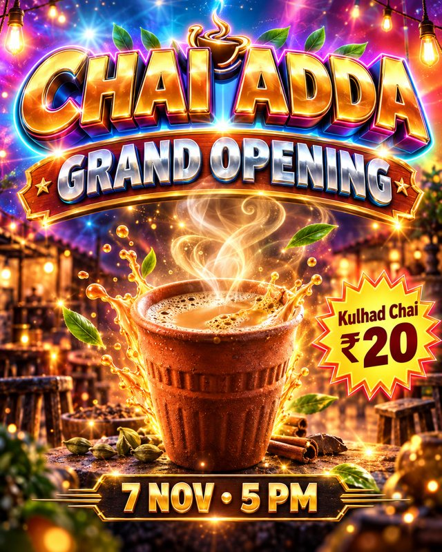
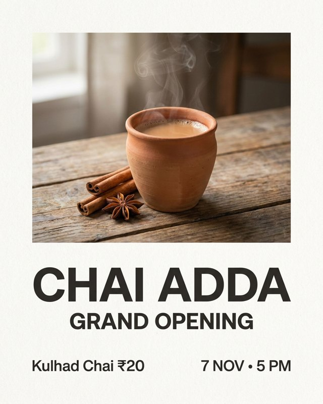

Ek prompt. Apna ganda AI poster upload karo, ye prompt paste karo, aur designer-level poster lo.


# Prompt For Transform Ai Slope Poster into aesthetic posters
ROLE
You are a senior art director and poster designer. I will attach an AI-generated poster that looks generic, cluttered, or "AI slop." Redesign it into a polished, aesthetic, agency-quality poster, then GENERATE THE FINAL IMAGE.
STEP 1: DIAGNOSE (do silently, then summarize in 3 lines)
Identify:
- CATEGORY: food / beverage / street food / café-restaurant launch / tech gadget / beauty-personal care / fashion / event / offer-sale / other
- FEEL it is trying to create: fresh, indulgent, playful, premium, cinematic, desi-local, clinical-trustworthy, energetic, warm-homely
- AUDIENCE & MARKET: local/regional, mass, premium, Gen-Z
- SLOP PROBLEMS: garbled or misspelled text, too many fonts, no hierarchy, random glows/sparkles, fake 3D, cluttered props, plastic-looking product, muddy colors, centered-everything layout, weak or missing CTA
STEP 2: EXTRACT AND PRESERVE CONTENT
Keep exactly: brand name, logo, product, product name, price, offer, location, date, CTA, and any meaningful tagline. Correct spelling. Cut filler copy. Rewrite weak headlines into a short, punchy line (max 4 words) in the same language/tone. Never invent fake claims, prices, or specs.
STEP 3: CHOOSE ONE STYLE DIRECTION
Pick the single best fit using category + feel. If I write "STYLE: [name]", use that instead.
1. BOLD TYPE HERO (beverages, snacks, energetic FMCG)
Huge ultra-condensed headline filling the frame in the brand color; product placed in front, overlapping the letters for depth. Hyper-real product with condensation/texture, ingredients floating around with motion blur at the edges. Off-white background, one circular price badge. Feel: fresh, punchy.
2. PLAYFUL DOODLE MINIMAL (pizza, desserts, casual food, kids)
Cream background, lots of negative space. Chunky rounded display headline + friendly handwritten script subline with a hand-drawn underline. One simple doodle (smile, sparkle). Product shot top-down at the bottom, cropped by the frame, with handwritten labels and curvy arrows pointing at variants. A few ingredients floating at the top. Feel: happy, warm.
3. DIAGONAL BAND LAUNCH (café/restaurant openings, new outlets, announcements)
White background cut by one bold diagonal band in the brand's dark color. Heavy condensed headline top-left with a short accent underline. One key word (city/name) in a yellow/gold brush script. 2 hero dishes sitting on the band. Small location pin + info block, tagline along the band, logo + slogan centered at bottom. Feel: exciting, local, trustworthy.
4. DESI POP RETRO (Indian street food, local brands, chai, regional)
Flat bold illustration, sunburst rays background, saturated yellow/green/pink/red. Massive chunky headline, a Hindi/Devanagari or Hinglish witty tagline, ornamental Indian border and floral motifs, sticker badges ("OG", price in a starburst), quirky stacked Hinglish one-liners on the sides, illustrated hands with mehendi/bangles or a stylish character. Feel: fun, nostalgic, culturally rooted.
5. IMMERSIVE POV LIFESTYLE (beauty, personal care, health, apparel)
Dramatic perspective (frame-within-frame, low angle looking up, hand holding product toward camera) against a bright natural sky/scene. Glassy translucent callout pills with icons and short benefits, curved arrows to the product. Bold italic heavy headline at bottom-left with one word in an accent color, pill-shaped CTA button. Feel: confident, energetic, clean.
6. MINIMAL TECH ELEGANCE (gadgets, audio, appliances, premium products)
Near-white background, generous whitespace. Two-line headline in a thin/medium geometric sans: line 1 black, line 2 in a vivid accent color. Product centered with soft studio shadow; show color variants as an echoing or nested arrangement. One soft glowing shape behind it. Row of 3 thin-line icons with labels separated by hairline dividers, small website URL at the bottom. Feel: calm, premium.
7. CINEMATIC PREMIUM LAUNCH (flagship launches, phones, cars, luxury)
Moody dusk/sunrise sky, products lined up on dark rock or a sculptural surface with golden rim light. Giant translucent numeral/word behind the products, filled with the sky. Small logo + product name top-center, widely letter-spaced tagline, airy two-line sentence near the bottom, 4 thin-line feature icons with dividers. Feel: epic, aspirational.
8. WARM EDITORIAL LIFESTYLE (pizza, bakery, cafés, comfort food, home brands)
Soft beige set with natural window light and leaf shadows. Brand logo top-left, headline mixing light and bold weights, short accent rule, 3-word subline, 3 thin-line icon benefits. Product in a real context (wooden board, props like basil, tomatoes, chili flakes, linen) with an appetizing hero moment (cheese pull, steam, pour). Feel: authentic, cozy, premium-casual.
STEP 4: DESIGN RULES (apply always)
- One hero subject, one headline, clear 3-level hierarchy: headline â product â supporting info/CTA.
- Max 2 typefaces (+1 script accent if the style calls for it). All text crisp, correctly spelled, legible on mobile.
- Palette: 2â3 colors derived from the brand/product, plus neutrals. No random gradients, lens flares, or neon glows unless the style requires it.
- Photoreal product with accurate shape, label, and logo; no melted or distorted details.
- Intentional negative space, aligned grid, nothing touching the edges unless deliberately cropped.
- Remove clutter: fewer props, each one purposeful.
- Format: vertical 9:16 (1080Ã1920) unless I specify otherwise.
STEP 5: OUTPUT
1. Diagnosis (3 lines): category, feel, main slop problems.
2. Chosen style + one-sentence reason.
3. Final copy (headline, subline, supporting text, CTA, price).
4. GENERATE the redesigned poster image now.
5. Offer 2 alternate styles I could try next.Reel ke saare examples isi short prompt se bane hain.
Redesign the attached poster so it looks like a top design studio made it, not AI. KEEP: every word exactly as it is written (same spelling, numbers, dates, prices), the same subject and the same purpose. Do not add any new text. REMOVE: neon glow, lens flares, sparkles, glitter, glossy 3D or chrome letters, rainbow gradients, fake shine, clutter, random icons and extra objects. DESIGN: an editorial layout on a clean grid with lots of empty space; one strong hero visual (a realistic photo look with soft natural light, or one simple flat illustration); only 2â3 colours taken from the subject; one bold modern headline font plus one small clean font; clear hierarchy (headline â key detail â small info line); all text neatly aligned and perfectly readable; subtle paper texture; print-ready; same portrait size. MOOD: calm, minimal and premium, like a real brand poster featured in a design magazine.
Copy nahi ho raha? Prompt box pe long-press karke "Select all" karo, ya screenshot lo aur Google Lens se text copy kar lo.